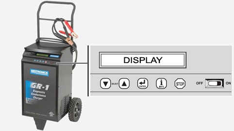
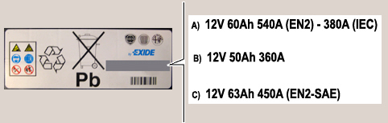

|


|
|
| Service News | ||
|
|
Various Alfa Models
All models (145/146 - 147 - 147 Ducati Corse - 156 - 159 - 164 - 166 - GT - GTV/Spider - Brera/Spider - MiTo - Giulietta) |
|
|||
| 5530 B 000 AA |
BATTERIES
Check condition, battery charge status and recharging methods - Network Information |
|||

|
In addition to Service News 55.08.09 of 10/07/2009 for the addition of the new Midtronics GR-1 240 instrument. |
A new instrument is available for the battery charging and recharging conditions:
-Midtronics GR-1 240 - part no. 2000035900Midtronics gr-1 240
The new Midtronics GR-1 240 instrument - part no. 2000035900, shown in Fig. 1, joins in a single equipment the battery charge and recharge condition control functions, improving the performance of available equipment and offering further functions.
The added functions vs. the previous instruments are:
- Diagnosis on the battery charge and conditions (based on algorithms measuring conductance)
- Displaying of results and measurements parameters, with printing of the ticket
- Release of encrypted code stating settings and results of the measurement
- Release of encrypted code stating the control parameters for the occurred recharging procedure
- Compatibility with the EN2 standard
- Possibility of updating the software and installing new programmes (by a CD with the firmware and a specific adapter for PC/Notebook with RS-232 port)
- LCD on two lines, 24 characters
- Navigation keypad
- IR/Serial printer
- Standard:
-EN, DIN, SAE, IEC, MCA, CA, CCA, JIS (total 8)-100 - 1500 DIN/IEC- Operating range (A):
-100 - 2400 EN/SAE/MCA/CA/CCA-100 - 1500 DIN/IEC-all JIS codes are pre-programmed (min. 43)- Possibility of recharging all battery types
- Possibility of recharging the battery directly on the vehicle
- Charging modes at 12/24 V (with conductance control)
- Max. charging current 60 A
- The recharging mode, with conductive control, of the instrument brings back an automotive battery from fully dead to starting conditions in less than one hour.
- At the beginning of the recharging stage, the instrument evaluates the battery conditions and, in case of severe faults, stops recharging and informs the operator that a new battery is required for the replacement of the old one.
- Max. recharging time: 2.5 h
- Continuous diagnosis during the first 5 minutes of the recharging step (based of algorithms evaluating the correlation values between voltage and current)
- The starting mode can be selected as well. The instrument requires an initial charge and informs the operator that the engine can be started for 5 seconds. The procedure can be repeated if required.
The new instrument can be carried through a suitable cart and is equipped with:
-two cables, length 180 cm, for connecting the battery;-instruction manual.-a printer with a spare paper roll-the printer power supply unit-IR sender for printing command transmissionFig. 1 - Midtronics GR-1 240 instrument

The battery charger has the following switches/keys, with the following functions:
1) ON/OFF switch – it powers the battery charger
2) Enter button: to select functions
3) Two selection buttons (arrows up and down) – to scroll the menu items up and down
4) Info button: activated when the test results are displayed; pressing it, the following information is available:
-display of the last recharge data-printout of the last recharge data-language-workshop data-printing of statistics-display of the BMC code-printing5) Stop button – it stops recharging
The diagram below shows the main technical features of the Midtronics GR-1 240 instruments vs. Midtronics XL513 and ISEAT CB-1 equipment currently present at the Dealership.
Battery charge status control
|
Operation |
Midtronics GR-1 240 |
Midtronics XL513 |
|
Diagnosis on the battery charge and conditions (based on algorithms measuring conductance) |
YES |
YES |
|
Displaying of results and measurement parameters - (printing of ticket in case of printer availability: Optional) |
YES |
YES |
|
Release of encrypted code stating settings and results of the measurement |
YES |
YES |
|
Release of encrypted code stating the control parameters for the occurred recharging procedure |
YES |
NO |
|
Compatibility with the EN2 standard |
YES |
NO |
|
Software update |
by a CD with the firmware and a specific adapter for PC/Notebook with RS-232 port |
by a suitable kit, sold separately |
|
Display |
with 24 characters |
with 12 characters |
|
Navigation keypad |
YES |
YES |
|
IR/Serial printer (optional) |
YES |
YES |
Battery charge
|
Operation |
Midtronics GR-1 240 |
ISEAT CB-1 |
|
Type of rechargeable batteries |
All |
Only batteries between 30 and 70 Ah (*) |
|
Possibility of recharging the battery on the vehicle |
YES |
NO |
|
Charging modes |
12 / 24 V |
12 V |
|
Max. charging current |
60 A |
10 A |
|
Max. recharging time |
2.5 h |
24 h |
|
Diagnosis |
Continuous during the first 5 minutes of the recharging step (based on algorithms evaluating the correlation values between voltage and current) |
at the end of the recharging stage (based on a simple control algorithm evaluating the final recharging current) |
(*) Currently also batteries with a higher rating are used (e.g.: 90 Ah on Croma and Alfa 159 with anti-theft system; 88 Ah on Croma, Alfa 159 and Brera for Cold Countries applications; 95 Ah and 110 Ah on Ducato vehicles).
OPERATIONS IN NETWORK
The instructions below concern:
1. battery charge status control
-Preliminary conditions and control instrument connection-Control with Midtronics GR-1 240 instrument and possible recharge-Control with Midtronics XL513 instrument2. electrolyte level control
3. battery recharge with CB-1 instrument
1 - battery charge status control
PRELIMINARY CONDITIONS AND CONTROL INSTRUMENT CONNECTION
Before connecting the instrument and carrying out the test, make sure the following conditions have been complied with:
-engine off-no consumer turned on, except for permanent loads with key-off (such as the clock)-the battery should not be damaged outside-the electrolyte level must be the right one (see item 2).-the battery terminals must be clean (otherwise, clean them with a wire brush for example) | The control can be carried out irrespective of the battery rest time. Only during PDI operations, the battery should be left in rest conditions for at least two hours before checking it. |
The battery charge conditions should be checked keeping it connected to the car electrical system, although the Midtronics instrument makes the check both with live battery (In Vehicle) and with disconnected battery (Out Of Vehicle).
Connect the instrument directly to the battery terminals, by the cables of the kit.
-Red clamps connected to the positive terminal-Black clamps connected to the negative terminal. | Cable clamps must be well connected to the battery terminals, otherwise the message "Check clamps connection" could be displayed. In this case, clean terminals, clamps and reconnect. |
Control with midtronics gr-1 240
1) The Midtronics GR-1 240 instrument is activated by the ON/OFF switch.
2) The MODE menu is displayed, referred to the recharging mode.
3) With the UP and DOWN arrows select DIAGNOSTIC FAST CHARGE.
4) Press the ENTER button to confirm.
5) The BATTERY LOCATION menu is displayed.
6)With the UP and DOWN arrows select the test type IN-VEHICLE (if the battery is disconnected, select OUT-OF-VEHICLE and pass to point 9).
7) Press the ENTER button to confirm.
8) With the UP and DOWN arrows select TOP POSTS.
9) Press the ENTER button to confirm.
10) The SELECT BATTERY TYPE menu is displayed.
11) With the UP and DOWN arrows select LEAD ACID.
12) Press the ENTER button to confirm.
13) The SELECT STANDARD menu is displayed.
14) With the UP and DOWN arrows select the testing standard shown on the battery data plate, according to the procedure described in the following table:
|
Testing standard on the battery |
Standard to be selected on the instrument |
|
EN2 or EN2 – SAE |
EN2 |
|
EN2 + IEC |
EN2 |
|
None |
IEC |
15) Press the ENTER button to confirm.
16) The SELECT VALUE menu is displayed (referred to the fast discharge current compatible with the selected measurement standard)
17) With the UP and DOWN arrows select the ampere rating shown in the data plate, as follows:
A - If both EN2 and IEC standards are available, select the value for IEC standard (380 A in example A - Fig. 2)
B - If no initials are given for the standard, select the value on the data plate (360 A in example B - Fig. 2)
C - If both Standards EN2 or EN2 SAE are present (see example C, Fig. 2), select the current value for Standard EN2
| The batteries featuring only the EN2 standard on the data plate are currently used only on vehicles with a Start&Stop system. |
Fig. 2 - Example of possible values on the battery data plate

18) Press the ENTER button to confirm
19) The writing "Analyzing battery" is displayed, with the following writing:
-Vbatt-time before the end of the analysis-Diagnostic mode-charged Ah.At the end of the analysis, the following three possibilities can occur:
Good battery warning
the battery is not recharged and the battery is OK.
The display shows the request press ENTER for BMC CODE: proceed as required.
Replace battery warning
the battery is not recharged and the battery must be replaced.
Start recharging
The display shows the request press ENTER for BMC CODE: proceed as required.
In the last stage, the TOP-OFF writing is displayed, referring to the last recharge stage with steady current.
At the end of the recharging, with three sound alarms, the display shows the writing press ENTER for BMC CODE: proceed as required.
Control with midtronics xl513
1) Midtronics XL513 starts automatically after the battery terminal connection; if this is not the case, recharge the battery (see item 3).
2) Press the ENTER button to start the test.
| After about 15 seconds of inactivity, the instrument is deactivated; press any button to restart it. |
3) With the UP and DOWN arrows select the test type IN-VEHICLE (if the battery is disconnected, select OUT-OF-VEHICLE and pass to point 8).
4) Press the ENTER button to confirm.
5) With the UP and DOWN arrows select BATTERY POLES.
6) Press the ENTER button to confirm.
7) With the UP and DOWN arrows select TOP POSTS.
8) Press the ENTER button to confirm.
9) With the UP and DOWN arrows select battery type REGULAR.
10) Press the ENTER button to confirm.
11) With the UP and DOWN arrows select the testing standard shown on the battery data plate, according to the following procedure.
|
Testing standard on the battery |
Standard to be selected on Midtronics |
|
EN2 |
IEC |
|
EN2 + IEC |
IEC |
|
EN2 + SAE |
SAE |
|
None |
IEC |
12) Press the ENTER button to confirm.
13) With the UP and DOWN arrows select from the field SELECT VALUES, the ampere rating shown in the data plate, as follows:
-A - If both EN2 and IEC standards are available, select the value for IEC standard (380 A in example A - Fig. 3).-B - If no initials are given for the standard, select the value on the data plate (360 A in example B - Fig. 3).-C - If both EN2 and SAE standards are available, select the value for SAE standard (450 A in example C - Fig. 3);-D - If only EN2 is stated, convert the value of the peak current from EN2 to IEC and select the obtained value (IEC), according to the following table:|
Value on data plate |
EN2 or EN2-SAE value |
Corresponding IEC value |
|
63 Ah 450 A EN2 |
450 A |
315 A |
|
72 Ah 570 A EN2 |
570 A |
400 A |
| The batteries featuring only the EN2 standard on the data plate are currently used only on vehicles with a Start&Stop system. |
Fig. 3 - Example of possible values on the battery data plate

14) Press the ENTER button to confirm.
15) If required, with the UP and DOWN arrows, select if the check to be made is before or after the battery recharging (Before charge or After charge).
16) Press the ENTER button to confirm.
17) Wait until the end of the test.
18) If the check results are to be printed, press the MENU button.
19) With the UP and DOWN arrows select PRINT RESULTS.
20) Take the printer.
21) Press the MODE button to switch the printer on.
22) Align the Midtronic printer IR ports.
23) Press the ENTER button to start printing.
24) At the end of the printing, press MODE to switch the printer off.
Depending on the test results, carry out the operations listed in the tables below:
-Table 1 – Operations to be made, valid for all service operations - PDI operation excluded-Table 2 – Operations expressly required for Routine PDI operationsTable 1 – (for all service operations, PDI excluded)
|
READ-OUT ON MIDTRONICS |
OPERATION |
|
Good battery |
No intervention. If the battery has been removed, refit it on the vehicle |
|
Good-Recharge |
Replacement is not necessary. Recharge the battery (as described in item 3 - Recharging mode). |
|
Charge and Retest |
Recharge the battery and carry out a new diagnosis. If the battery has not been fully recharged, the instrument reading may not be correct. If the result of the new diagnosis is other than "GOOD BATTERY", replace the battery with another one having the same specifications and carry out a new diagnosis. |
|
Replace battery |
A "REPLACE BATTERY" reading may be due to a poor battery cable connection; to check it, disconnect the cables from the battery and carry out a new diagnosis. If the result is still negative, replace the battery with another one having the same specifications and carry out a new diagnosis |
|
Bad cell |
Replace the battery with another one having the same specifications and carry out a new diagnosis. |
During Routine PDI operation, after checking the battery charge status, if the reading is "Good battery", make a further control of voltage values, then, depending on the measured values, follow the figures of Table 2.
For voltage value measurement, select:
-Press the MENU button.-With the UP and DOWN arrows select the Voltmeter mode.-Press the ENTER button to confirm.Table 2 (Expressly for Routine PDI operations)
|
READ-OUT ON MIDTRONICS |
OPERATION | |
|
Good battery |
Vehicles without Start&Stop system | |
|
Battery voltage |
Operation | |
|
Vbat >= 12.45 V |
Battery OK. No intervention. | |
|
Vbat < 12.45 V |
Recharge the battery (as described in item 3 - Recharging mode). | |
|
Vehicles with Start&Stop system | ||
|
Battery voltage |
Operation | |
|
Vbat >= 12.50 V |
Battery OK. No intervention. | |
|
Vbat < 12.50 V |
Recharge the battery (as described in item 3 - Recharging mode). | |
|
Good-Recharge |
Replacement is not necessary. Recharge the battery (as described in item 3 - Recharging mode). | |
|
Charge and Retest |
Recharge the battery and carry out a new diagnosis. If the battery has not been fully recharged, the instrument reading may not be correct. If the result of the new diagnosis is other than "GOOD BATTERY", replace the battery with another one having the same specifications and carry out a new diagnosis. | |
|
Replace battery |
A "REPLACE BATTERY" reading may be due to a poor battery cable connection; to check it, disconnect the cables from the battery and carry out a new diagnosis. If the result is still negative, replace the battery with another one having the same specifications and carry out a new diagnosis | |
|
Bad cell |
Replace the battery with another one having the same specifications and carry out a new diagnosis. | |
2 – electrolyte level check
Check the level of the electrolyte in all the battery cells by looking through the container if is transparent; if the battery container is dull black, remove the plugs (or the plug list) in order to check the level through the filler ports.
The maximum level is reached when the lower end of the dipstick is in contact with the electrolyte.
The minimum level is when the electrolyte is more than about 10 mm above the top of the separators and/or plates; to check this, immerse a non-metal clean stick (e.g. wood, glass or plastic) in the electrolyte until it touches the top of the separators and/or plates measuring the height of the electrolyte.
3 – battery recharge with instrument cb-1
-Recharging methodsTo recharge the battery, the instrument ISEAT CB-1 can be used.
This instrument recharges the battery through an automatic procedure and is capable of adjusting the recharging parameters in relation to the battery status and interrupting the procedure if there is a problem and sending a signal to the operator.
 | Avoid rapid recharging at all costs. The battery with the instrument ISEAT CB 1 should be disconnected from the vehicle electrical system when it is being recharged. |
In any case the true battery charge must be checked at the end of the recharging using the Midtronics GR-1 240 or XL515 instrument.
| The battery should be left to rest for at least two hours after recharging before checking. |
The battery recharging time varies depending on the following conditions:
-original charge status;-battery capacity;-general conditions of the battery;-type of battery charger used.Let us suppose that a battery that was fully run down but not defective needs recharging, the maximum time for an ISEAT CB-1 battery charger is 24 hours.